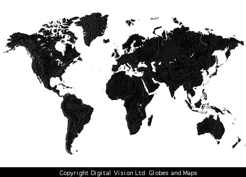

[亚洲] [北美洲] [南美洲] [欧洲] [大洋洲] [非洲]
亚洲是亚细亚洲的简称，位于东半球的东北部。东临太平洋，南濒印度洋，北达北冰洋。面积4400万平方公里，占全球陆地总面积的29.4%，是世界上最大的洲。
北美洲是北亚美洲加洲的简称，位于西半球北部，东面是大西洋，西面是太平洋，北面是北冰洋，南端以巴拿马运河为界与南美洲相分。
南美洲是南亚美利加洲的简称，位于西半球西部，东面是大西洋，陆地以巴拿马运河为界与北美洲相分，南面隔海与南极洲相望。
欧洲是欧罗巴洲的简称，位于东半球的西北部。北临北冰洋，西濒大两洋，南隔地中海与非洲相望，东部与亚洲大陆毗连。
大洋洲位于太平洋西南部和南部、赤道南北的广大海域，总面积约897万平方公里，人口2900万是世界上面积最小、人口最少的一个洲。
非洲全称阿非利加洲，位于东半球的东南部，赤道横穿大陆。西北部有部分地区以及岛屿伸入西半球，是仅次于亚洲的第二大洲。